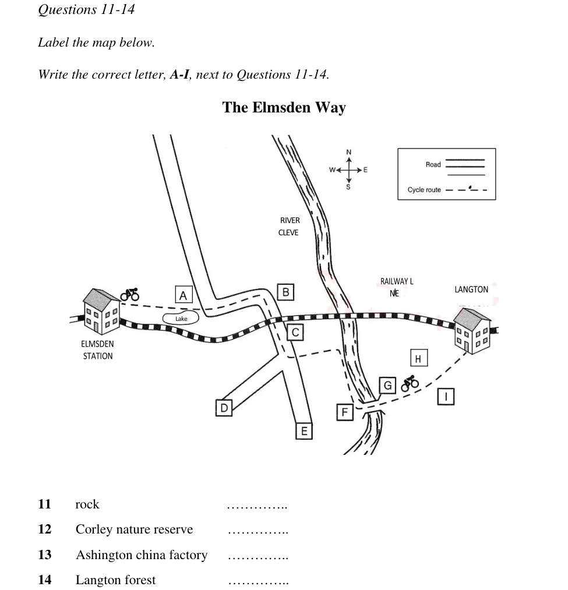

Recent Actual Test 7 · Listening Test 1
Listening and questions
Section 1Questions 1–10
Questions 1–10
Complete the notes below.
Write ONE WORD AND/ OR A NUMBER for each answer.
Lifeguard Application
Personal information
Name: Peter Smith
Address: 130 South Main Street, Lake 1
Contact number: 2 (cellphone)
Work experience
has a part-time job as a 3
is studying PE now
hope to work in a high school as a 4 coach
Other relevant work experience: worked at the 5 as a lifeguard
Qualification for water safety:
Good level of concentration
Good vision
Other relevant skills: 6
need a certificate: it expires in 7
Other information
Preferred working time: 8 mornings
He can start to work at 9 o’clock
Source of information: 10
Section 2Questions 11–20

Questions 15–20
Choose the correct letter, A, B or C.
15 What warning does the speaker give about cycling on the Elmsden Way?
16 What does the speaker say about Elmsden Station?
17 In the Visitors' Centre, people can
18 If cyclists want to travel between Elmsden and Langton by train,
19 What warning does the speaker give about walking to the River Elm?
20 To find out about other cycle paths in the region, you can
Section 3Questions 21–30
Questions 21–25
What did the students say about each of the following volcanoes for their presentation?
Choose FIVE answers from the box and write the correct letter, A-G, next to Questions
21-25.
Comment
- A need more photos to support
- B repeat other people's studies
- C inaccurate information
- D need first-hand material
- E need more details
- F no need to talk about it
- G check again
Type of volcanoes
21 shield volcanoes
22 stratovolcanoes
23 rhyolite caldera complexes
24 monogenetic fields
25 cinder cones
Questions 26–30
Choose the correct letter, A, B or C.
26 In Erica's view, what is wrong with Ian's last presentation?
27 What materials do the students agree to add to their presentation?
28 By using extinct and dormant volcanoes, the students try to
29 What did the professor say about Erica's last presentation?
30 The students both agree that volcanoes
Section 4Questions 31–40
Questions 31–40
Complete the notes below.
Write ONE WORD ONLY for each answer.
Dolphin Intelligence
Point 1: Not highly intelligent
Research on the size of dolphin brains
Dolphins cannot find a way of escaping barriers such as fishing 31
for catching tuna.
People wrongly thought dolphins to be smart and happy as they often have a
32
Small-brained animals such as pigeons and 33 can perform various
complex tasks.
Pigeons are 34 of themselves.
Pigeons are trained to conditional responses and 35 reactions.
Counter argument
Fatty cells in dolphin brains are linked to protective function and problem- solving
skills.
Point 2: highly intelligent
Research on dolphin behaviour
Billy can imitate the keepers' 36 through other dolphins.
Karen hides a 37 for more food.
For the past century, dolphins have been seen as 38 animals.
Each dolphin produces a unique sound, like the 39
They touch each other to make up after a 40
Check your answers
Marking ignores capital letters and accepts plurals and the usual alternative answers. If your answer is right but not accepted, press My answer is also right under it.